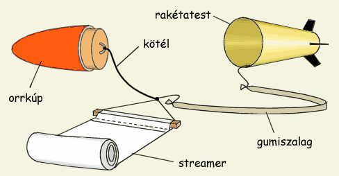
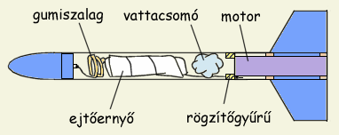

Az ejtõernyõ elhelyezése szempontjából meghatározó, hogy milyen típusú kioldást használunk. Elektromos kioldás esetében az ernyõt bárhová tehetjük, mivel a kidobószerkezetet oda építhetjük be ahová akarjuk, illetve ahová befér. Ha azonban a motor fogja majd kioldani az ejtõernyõt, akkor nem marad más hátra, minthogy a hagyományos módon az orrkúp és motor közé helyezni az ejtõernyõt. Mindkét esetben érvényesek azonban a következõ megállapítások:
|  |
| 1. Ábra: Rakéta streamerrel és gumiszalaggal. A streamer
úgy a rakéta testéthez, mint az orrkúphoz rögzítve kell legyen |
Az ejtõernyõt rugalmasan kell az orrhoz, illetve a törzshöz fogatni, mert különben kioldáskor leszakadhat. Leggyakoribb gumiszalagot használni a kidobás energiájának elnyeletésére. Általában elég, ha csak a törzs és ejtõernyõ között használunk rugalmas kötést, majd az egészet erõsen az orrkúphoz kötjük. Egy ilyen megoldás látható az 1. Ábrán. Gyõzõdjünk meg róla, hogy a gumiszalagunk kellõen erõs és elég hosszú, különben elszakadhat. Nagyobb rakétáknál ajánlatos az orrkúpot is rugalmasan erõsíteni az ejtõernyõhöz. Gyakori megoldás a kötél-gumi-kötél illesztés is, ez rövidebb gumiszalag használatát teszi lehetõvé. A törzsbe a kötelet legkönnyebb cellux-al beragasztani, ha azonban nem túl kis rakétáról van szó, jobb a motorvisszatartó gyûrûhöz, vagy egy kampó segítségével akár magához a motorhoz erõsíteni. Ha a motorhoz erõsítjük, megszûnik annak veszélye is, hogy a kidobótöltet gázai a gyengén rögzített motrot tolnák ki a törzsbõl az ejtõernyõ helyett.
Az ejtõernyõt valamilyen módon óvni kell a kidobótöltet lángjától és forró gázaitól. Ezért az ernyõ és a kidobótöltet közé egy vattacsomót helyezünk, amely kidobáskor dugattyúként maga elõtt fogja tolni az ernyõt amíg az ki nem szabadul a törzsbõl. A vattacsomó mindig megég, ezért minden alkalommal cserélni kell majd. A biztonság kedvéért nem árt egy réteg papírba is belecsavarni az ernyõt, amely azonnal leesik róla amint a törzsbõl kicsúszott. Fõként neylonzacskóból készült ejtõernyõk/streamerek esetén lényeges a hõvédelem, mert ezek könnyen összeolvadnak és nem nyílnak majd ki. Ritkábban alkalmazott megoldás, hogy a kidobótöltet gázait alumíniumforgácson áramoltatjuk át, amely lefogja a lángot és csak a gázak jutnak az ejtõernyõhöz. A vattabuci azonban így is szükséges.
Az ejtõernyõt, gumiszalagot, vattacsomót, papírt meg minden mozgó alkatrészt amely a kidobószerkezethez tartozik hintõporral kell beszórni, a kioldás könnyítése érdekében. Ha ugyanis megszorul az ejtõernyõ a törzsben, akkor valószínûleg kidurran a rakéta oldala a bent keletkezõ nyomástól. Mûanyagfóliából készült ejtõernyõk kupolájába is érdemes hintõport szórni csomagoláskor, mert megakadályozza az összetapadást. Fellövés elõtt gyõzõdjünk meg, hogy az ejtõernyõ nem szorul a törzsben. Ugyanez érvényes az orrkúpra is: ha beragad az orrkúp, nem nyílik ki az ejtõernyõ.
Az ejtõernyõt az orrkúphoz minél közelebb érdemes elhelyezni, mert így tömege a kiegyensúlyozás szempontjából hasznossá válik. Vigyázni kel azonban arra, hogy fellövéskor az ernyõnek ne legyen lehetõsége a motor felé csúszni, mert az a tömegközéppont (CG) hátramozdulásához illetve a stabilitás elvesztéséhez vezethet.
A 2. Ábrán egy "hagyományos" elrendezésû rakéta látható, kidobótöltetes motorral és a motorvisszatartó gyûrûhöz rögzített ejtõernyõvel.
|  |
| 2. Ábra: Hagyományos elrendezés: motor, vattacsomó,
ejtõernyõ és orrkúp szépen sorban |